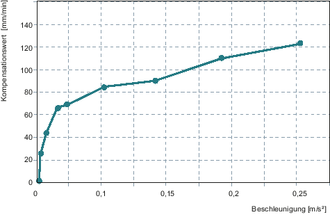
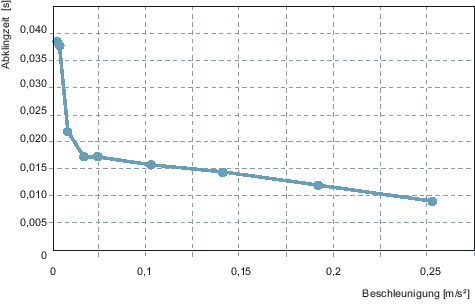

Die Maschinendaten zur Aktivierung der Reibkompensation für die Y-Achse sind gesetzt:
MD32490 = 3
MD32510 = 1
Die Y-Achse wird mit folgenden Einstellungen gemessen:
Radius 5 mm in SD55820 $SCS_FRICT_OPT_RADIUS
Vorschubgeschwindigkeiten in SD55822[n] $SCS_FRICT_OPT_FEED
Die Wirkzeit wird nicht angepasst.
Schritt 1 von 8: 700 mm/min | Amplitude: 68.696 mm/min Abklingzeit: 0.017 s |
Schritt 2 von 8: 560 mm/min | Amplitude: 66.240 mm/min Abklingzeit: 0.017 s |
Schritt 3 von 8: 350 mm/min | Amplitude: 43.330 mm/min Abklingzeit: 0.021 s |
Schritt 4 von 8: 140 mm/min | Amplitude: 23.848 mm/min Abklingzeit: 0.038 s |
Schritt 5 von 8: 1060 mm/min | Amplitude: 84.688 mm/min Abklingzeit: 0.015 s |
Schritt 6 von 8: 1410 mm/min | Amplitude: 90.018 mm/min Abklingzeit: 0.014 s |
Schritt 7 von 8: 1770 mm/min | Amplitude: 109.839 mm/min Abklingzeit: 0.012 s |
Schritt 8 von 8: 2120 mm/min | Amplitude: 123.012 mm/min Abklingzeit: 0.009 s |
Die folgenden Kennlinien zeigen die Amplitude und die Abklingzeit bei unterschiedlichen Beschleunigungen:
|  | |
|  |
Siehe auch:
Reibkompensation - automatische Optimierung
Datenliste
Achsauswahl und Statusanzeige